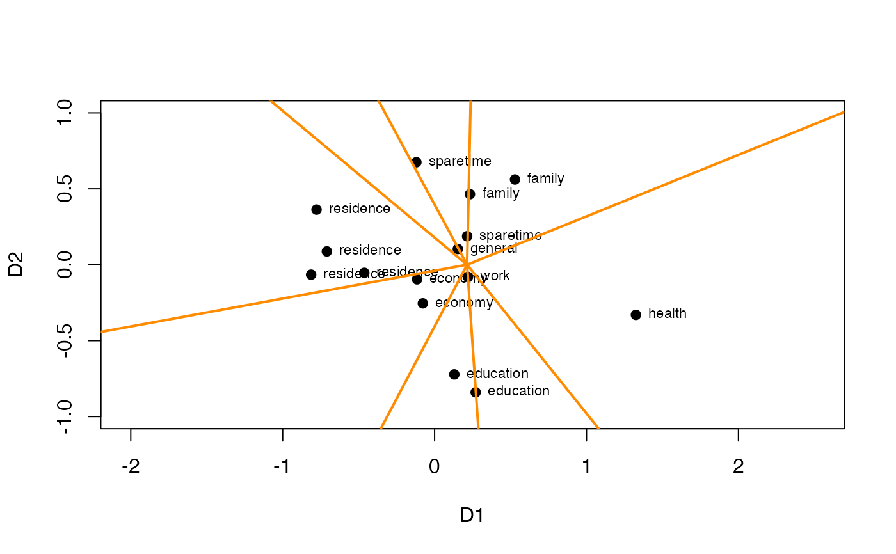

Life Satisfaction Data
Life.RdData are from Levy (1976; see Borg & Groenen, 2005). Life is a list containing the correlations among fifteen items asking about life satisfaction, and the corresponding assignments to two facets.
Format
A list with two components: life is a correlation matrix of fifteen items from a survy asking about different areas of life satisfaction; life_facets is a data frame with assignments to two facets: Status (2 elements), and Area (8 elements). For details see Levy (1976) and Borg and Groenen (2005).
- life
A correlation matrix of 15 items about aspects of life satisfaction
- life_facets
A data frame with 15 rows and 3 variables:
- Status
The Status facet with 2 elements
- Area
The Area facet with 8 elements
References
Borg, I., & Groenen, P. J. F. (2005) (2nd ed.). Modern multidimensional scaling. Theory and applications. New York: Springer.
Levy, S. (1976). Use of the mapping sentence for coordinating theory and research: A cross-cultural example. Quality and Quantity, 10, 117-125.
Examples
data(Life)
life <- Life$life
life_facets <- Life$life_facets
lifeD <- smacof::sim2diss(life, method = "corr")
life_mds <- smacof::mds(delta = lifeD, type = "ordinal")
life_mds
#>
#> Call:
#> smacof::mds(delta = lifeD, type = "ordinal")
#>
#> Model: Symmetric SMACOF
#> Number of objects: 15
#> Stress-1 value: 0.114
#> Number of iterations: 34
#>
plot(x = life_mds$conf, pch = 19,
xlim = c(-1, 1.5), ylim = c(-1, 1), asp = 1)
text(x = life_mds$conf, labels = life_facets$Area,
cex = 0.7, pos = 4)
angularPartition(crd = life_mds$conf,
group = life_facets$Area)

#> $cuts
#> Housing Savings UseEduc Job Health Family
#> -2.9599655 -2.0549478 -1.5019697 -0.8945297 0.3848351 1.5490614
#> Friendships LifeGeneral
#> 2.0657315 2.4459769
#>
#> $margin
#> [1] 0.0001289194
#>
#> $sector
#> [1] 4 4 4 4 6 6 7 2 8 5 5 2 1 1 3
#>
#> $majority
#> [1] "family" "sparetime" "general" "residence" "economy" "education"
#> [7] "work" "health"
#>
#> $center
#> [1] 0.2138004 0.0000000
#>
#> $pt_angles
#> City Neighborhood Housing LifeUS AmountEduc UseEduc
#> 3.0469316 -3.0778042 -3.0628494 2.7904749 -1.6866874 -1.5035723
#> Job SpareTime Health StandLiving Savings Friendships
#> -1.5003670 1.5680924 -0.2886923 -2.8570816 -2.4232082 2.0299842
#> Marriage Family LifeGeneral
#> 1.0583625 1.5300305 2.1014788
#>
#> $misclass
#> [1] 0
#>
#> $misclass_points
#> [1] x y label
#> <0 rows> (or 0-length row.names)
#>